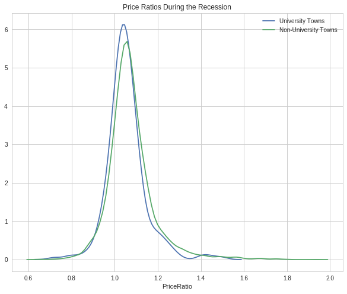

Assignment 4 - University Towns and Recessions
This assignment takes three sources of data to see if housing prices in university towns are affected less by recessions.
Imports
# python standard library
from abc import ABCMeta
from abc import abstractproperty
import operator
import re
# third party
import matplotlib
import numpy
import pandas
import statsmodels.stats.api as statsmodels
from pylab import rcParams
from scipy.stats import ttest_ind
Constants
COLUMN_AXIS = 1
DEBUG = True
Plotting Setup
if DEBUG:
import seaborn
%matplotlib inline
seaborn.set_style("whitegrid")
rcParams["figure.figsize"] = 10, 8
Definitions
- A quarter is a specific three month period, Q1 is January through March, Q2 is April through June, Q3 is July through September, Q4 is October through December.
- A recession is defined as starting with two consecutive quarters of GDP decline, and ending with two consecutive quarters of GDP growth.
- A recession bottom is the quarter within a recession which had the lowest GDP.
- A university town is a city which has a high percentage of university students compared to the total population of the city.
Hypothesis: University towns have their mean housing prices less effected by recessions. Run a t-test to compare the ratio of the mean price of houses in university towns the quarter before the recession starts compared to the recession bottom. (price_ratio=quarter_before_recession/recession_bottom)
Data Files
The following data files are available for this assignment:
- From the Zillow research data site there is housing data for the United States. In particular the datafile for all homes at a city level, CityZhviAllHomes.csv, has median home sale prices at a fine grained level.
- From the Wikipedia page on college towns is a list of university towns in the United States which has been copy and pasted into the file universitytowns.txt.
UNIVERSITY_TOWNS_DATA = "university_towns.txt" GDP_DATA = "gdplev.xls" HOUSING_DATA = "City_Zhvi_AllHomes.csv"
Each function in this assignment below is worth 10%, with the exception of runttest(), which is worth 50%.
Base Data Class
This is a base-class to establish what the data-loaders need to implement.
class BaseData(object):
"""Base class for the data-loaders
Parameters
----------
settings: object
holder of settings needed to load the data
"""
__meta__ = ABCMeta
def __init__(self, settings):
self.settings = settings
self._data = None
return
@abstractproperty
def data(self):
"""the data-frame"""
return
Load the University Towns data
Use this dictionary to map state names to two letter acronyms.
states = {'OH': 'Ohio', 'KY': 'Kentucky', 'AS': 'American Samoa', 'NV': 'Nevada', 'WY': 'Wyoming', 'NA': 'National', 'AL': 'Alabama', 'MD': 'Maryland', 'AK': 'Alaska', 'UT': 'Utah', 'OR': 'Oregon', 'MT': 'Montana', 'IL': 'Illinois', 'TN': 'Tennessee', 'DC': 'District of Columbia', 'VT': 'Vermont', 'ID': 'Idaho', 'AR': 'Arkansas', 'ME': 'Maine', 'WA': 'Washington', 'HI': 'Hawaii', 'WI': 'Wisconsin', 'MI': 'Michigan', 'IN': 'Indiana', 'NJ': 'New Jersey', 'AZ': 'Arizona', 'GU': 'Guam', 'MS': 'Mississippi', 'PR': 'Puerto Rico', 'NC': 'North Carolina', 'TX': 'Texas', 'SD': 'South Dakota', 'MP': 'Northern Mariana Islands', 'IA': 'Iowa', 'MO': 'Missouri', 'CT': 'Connecticut', 'WV': 'West Virginia', 'SC': 'South Carolina', 'LA': 'Louisiana', 'KS': 'Kansas', 'NY': 'New York', 'NE': 'Nebraska', 'OK': 'Oklahoma', 'FL': 'Florida', 'CA': 'California', 'CO': 'Colorado', 'PA': 'Pennsylvania', 'DE': 'Delaware', 'NM': 'New Mexico', 'RI': 'Rhode Island', 'MN': 'Minnesota', 'VI': 'Virgin Islands', 'NH': 'New Hampshire', 'MA': 'Massachusetts', 'GA': 'Georgia', 'ND': 'North Dakota', 'VA': 'Virginia'}
First, a quick look at the top of the file.
head university_towns.txt
Alabama[edit] Auburn (Auburn University)[1] Florence (University of North Alabama) Jacksonville (Jacksonville State University)[2] Livingston (University of West Alabama)[2] Montevallo (University of Montevallo)[2] Troy (Troy University)[2] Tuscaloosa (University of Alabama, Stillman College, Shelton State)[3][4] Tuskegee (Tuskegee University)[5] Alaska[edit]
The University Data Builder
Now the classes to load the university-town data.
class UniversitySettings(object):
"""settings for the UniversityData"""
source = UNIVERSITY_TOWNS_DATA
state_substring = "[edit]"
state_split = "["
region_split = " ("
columns = ["State", "RegionName"]
class UniversityData(BaseData):
"""builder of the data"""
@property
def data(self):
"""the data-frame with university state/regions"""
if self._data is None:
lines = []
with open(self.settings.source) as data:
for line in data:
if self.settings.state_substring in line:
state = line.split(self.settings.state_split)[0].strip()
else:
region = line.split(self.settings.region_split)[0].strip()
lines.append([state, region])
self._data = pandas.DataFrame(lines, columns=self.settings.columns)
return self._data
In retrospect I would have done this with regular expressions, but it seemed simple enough that I went with the string methods instead.
get_list_of_university_towns is the first assignment question.
def get_list_of_university_towns():
'''Returns a DataFrame of towns and the states they are in from the
university_towns.txt list. The format of the DataFrame should be:
DataFrame( [ ["Michigan", "Ann Arbor"], ["Michigan", "Ypsilanti"] ],
columns=["State", "RegionName"] )
The following cleaning needs to be done:
1. For "State", removing characters from "[" to the end.
2. For "RegionName", when applicable, removing every character from " (" to the end.
3. Depending on how you read the data, you may need to remove newline character '\n'. '''
builder = UniversityData(UniversitySettings)
return builder.data
output = get_list_of_university_towns()
assert output[output.RegionName.str.startswith("Ann Arbor")].State.iloc[0] == "Michigan"
assert output[output.RegionName.str.startswith("Ypsilanti")].State.iloc[0] == "Michigan"
if DEBUG:
print(output[output.State.str.startswith("Michigan")].iloc[:5])
State RegionName
194 Michigan Adrian
195 Michigan Albion
196 Michigan Allendale
197 Michigan Alma
198 Michigan Ann Arbor
It looks reasonable, but someone on the Coursera site provided a little more code to do some checks to see if things look okay.
Load the GDP Data
From the Bureau of Economic Analysis, US Department of Commerce, the GDP over time of the United States in current dollars (use the chained value in 2009 dollars), in quarterly intervals, is in the file gdplev.xls. For this assignment, only look at GDP data from the first quarter of 2000 onward.
class GDPSettings(object):
"""holder of settings to load and clean the data"""
source = GDP_DATA
skip_rows = 8
columns = ["Year", "Annual GDP Current Billions",
"Annual GDP 2009 Billions", "to_delete", "YearQuarter",
"Quarterly GDP Current Billions", "Quarterly GDP 2009 Billions",
"to_delete"]
quarterly_column = "Quarterly GDP 2009 Billions"
first_quarter = "2000q1"
delete_columns = "to_delete"
class GDPData(BaseData):
"""GDP Data Loader and cleaner"""
@property
def data(self):
if self._data is None:
self._data = pandas.read_excel(self.settings.source,
skiprows=self.settings.skip_rows,
names=self.settings.columns)
self._data = self._data.drop(self.settings.delete_columns,
axis=COLUMN_AXIS)
return self._data
Get Recession Start
if DEBUG:
data = GDPData(GDPSettings).data
data = data.iloc[data[data.YearQuarter==GDPSettings.first_quarter].index[0]:]
axis = data.plot(x="YearQuarter", y=GDPSettings.quarterly_column)
axis.set_title("GDP vs Quarter")

The plot seems to show that there was a recession starting around 2008, with the low-point coming in 2009.
def get_later_data():
"""
Returns
-------
DataFrame: GDP data from 2000 q1
"""
data = GDPData(GDPSettings).data
data = data.iloc[data[data.YearQuarter==GDPSettings.first_quarter].index[0]:]
return data.dropna(COLUMN_AXIS).reset_index()
This next function is not easy to read. I first wrote a function to find the start of the recession and decided to try and re-use it by passing in the comparison operator (operator.gt is > and operator.lt is <). Greater than finds the start of the recession and less than finds the end of the recession, but it's short by one - it actually finds the last quarter of the recession, while the end of the recession is the next quarter (the one where the GDP actually goes up) so you have to add 1 to the returned result.
def recession_index(data, compare=operator.gt):
"""returns the index of the start/end of the recession
Parameters
----------
data: DataFrame
GDP data to search
compare: function
compare quarters (change to < to find end)
Returns
-------
int : iloc of start of first recession found or end-1
"""
for index, gdp in enumerate(data[GDPSettings.quarterly_column]):
next_gdp = data[GDPSettings.quarterly_column].iloc[index + 1]
if (index != 0 and
(compare(data[GDPSettings.quarterly_column].iloc[index - 1],
gdp) and compare(gdp, next_gdp))):
return index
elif (compare(gdp, next_gdp) and
compare(next_gdp, data[GDPSettings.quarterly_column].iloc[index + 2])):
return index + 1
def get_recession_start():
'''Returns the year and quarter of the recession start time as a
string value in a format such as 2005q3'''
data = get_later_data()
index = recession_index(data)
return data.YearQuarter.iloc[index]
if DEBUG:
print(get_recession_start())
2008q3
Get the Recession End
def get_recession_end():
'''Returns the year and quarter of the recession end time as a
string value in a format such as 2005q3'''
data = get_later_data()
start = get_recession_start()
data = data[data[data.YearQuarter==start].index[0]:]
# recession_index will get the last quarter of the recession
# not the end (first quarter out of the recession)
# so add 1
index = recession_index(data, operator.lt) + 1
return data.YearQuarter.iloc[index]
if DEBUG:
print(get_recession_end())
2009q4
The Recession Bottom
def get_recession_bottom():
'''Returns the year and quarter of the recession bottom time as a
string value in a format such as 2005q3'''
data = get_later_data()
start = get_recession_start()
end = get_recession_end()
data = data[data[data.YearQuarter==start].index[0]:
data[data.YearQuarter==end].index[0]]
return data.YearQuarter.loc[data[GDPSettings.quarterly_column].argmin()]
if DEBUG:
print(get_recession_bottom())
2009q2
start = get_recession_start()
bottom = get_recession_bottom()
end = get_recession_end()
data = get_later_data()
data = data[data[data.YearQuarter==start].index[0]:
data[data.YearQuarter==end].index[0]+1]
line = [data[GDPSettings.quarterly_column].min(),
data[GDPSettings.quarterly_column].max()]
axis = data.plot(x="YearQuarter", y=GDPSettings.quarterly_column)
axis.axvline([3], color='r')
axis.set_title("Recession GDP Vs Quarter")

Our plot seems to match the values found by our functions. The recession started in the third quarter of 2008 and ended in the fourth quarter of 2009, with the lowest GDP coming in the second quarter of 2009 (both the starting and the ending of a recession require two consecutive quarters of decline or improvement).
Load the Housing Data
The housing data has a lot of columns, so I'm not going to show them. The first columns are categorical:
- RegionID
- RegionName
- State
- Metro
- CountyName
- SizeRank
Then there are columns for each month from April 1996 through August 2016. The column names take the form <year>-<month> so the first date column-header looks like this:
- 1996-04
Now the housing-data classes.
class HousingSettings(object):
"""holds the settings for the housing data"""
source = "City_Zhvi_AllHomes.csv"
years = ["20{0:02d}".format(year) for year in range(17)]
year_month_pattern = re.compile("20\d\d-\d\d")
quarters = [re.compile("|".join(["{0:02d}".format(month)
for month in range(start, start+3)]))
for start in range(1, 11, 3)]
class HousingData(BaseData):
"""loads the housing data"""
@property
def data(self):
"""
Returns
-------
DataFrame: frame with the zillow housing data
"""
if self._data is None:
self._data = pandas.read_csv(self.settings.source)
self._data.State = self._data.State.map(lambda x: states[x])
quarters = self.convert_quarters(self._data)
tuples = [self._data.State, self._data.RegionName]
multi_index = pandas.MultiIndex.from_tuples(list(zip(*tuples)),
names=["State", "RegionName"])
self._data = quarters.set_index(multi_index)
return self._data
def convert_quarters(self, data):
"""creates a data-frame with the data as means of quarters
Parameters
----------
data: DataFrame
Housing Data
Returns
-------
DataFrame: month columns from data converted to means of quarters
"""
all_years = data.select(lambda x: self.settings.year_month_pattern.match(x),
axis=COLUMN_AXIS)
means = {}
for year_label in self.settings.years:
year = all_years.select(lambda x: re.search(year_label, x),
axis = COLUMN_AXIS)
for index, quarter_regex in enumerate(self.settings.quarters):
quarter = year.select(lambda x: quarter_regex.search(x),
axis=COLUMN_AXIS)
means["{0}q{1}".format(year_label, index+1)] = quarter.mean(axis=COLUMN_AXIS)
return pandas.DataFrame(means).dropna(axis="columns", how="all")
Housing Data To Quarters
Since our GDP data is per-quarter but our housing data is per-month we have to re-calculate the housing data into quarters.
def convert_housing_data_to_quarters():
'''Converts the housing data to quarters and returns it as mean
values in a dataframe. This dataframe should be a dataframe with
columns for 2000q1 through 2016q3, and should have a multi-index
in the shape of ["State","RegionName"].
Note: Quarters are defined in the assignment description, they are
not arbitrary three month periods.
The resulting dataframe should have 67 columns, and 10,730 rows.
'''
housing = HousingData(HousingSettings)
return housing.data
if DEBUG:
outcome = convert_housing_data_to_quarters()
assert outcome.shape == (10730, 67)
The Hypothesis test
This where we test our hypothesis that university towns saw less of a drop in housing values than non-university towns did during the 2008-2009 recession that we found above using the GDP data. Our measure of housing value decline will be a calculation of the ratio of the price of housing in the quarter prior to the recession to the price of housing at the bottom of the recession. The more of a drop in value there is, the larger this ratio will be (because the denominator will shrink more as the price drops). We'll use a two-value t-test to check the significance.
class TTest(object):
"""settings for the t-test"""
price_ratio = "PriceRatio"
intersection = "inner"
merge_columns = UniversitySettings.columns
threshold = 0.01
university_town = "university town"
non_university_town = "non-university town"
class HypothesisTester(object):
"""t-tester comparing university and non-university towns
"""
def __init__(self):
self._start = None
self._bottom = None
self._housing_data = None
self._price_ratios = None
self._university_towns = None
self._university_price_ratios = None
self._non_university_price_ratios = None
self._p_value = None
self._t_statistic = None
self._better = None
return
@property
def university_data(self):
"""the data for university towns"""
if self._university_data is None:
self._university_data = UniversityData(UniversitySettings).data
return self._university_data
@property
def start(self):
"""start of the recession
Returns
-------
String: column name of the start of the recession
"""
if self._start is None:
# I was using the start of the recession but it should actually
# be the quarter before the recession started
data = get_later_data()
index = recession_index(data) - 1
self._start = data.YearQuarter.iloc[index]
return self._start
@property
def bottom(self):
"""nadir of the recession
Returns
-------
String: column name of the bottom of the recession
"""
if self._bottom is None:
self._bottom = get_recession_bottom()
return self._bottom
@property
def housing_data(self):
"""housing data
Returns
-------
DataFrame: housing data with quarter-means
"""
if self._housing_data is None:
self._housing_data = convert_housing_data_to_quarters()
return self._housing_data
@property
def university_towns(self):
"""The university towns
"""
if self._university_towns is None:
self._university_towns = get_list_of_university_towns()
return self._university_towns
@property
def price_ratios(self):
"""ratios of start to bottom of recession prices
Moves the index to columns so it can be merged
Returns
-------
DataFrame: price-ratios
"""
if self._price_ratios is None:
# div returns a series
self._price_ratios = self.housing_data[self.start].div(
self.housing_data[self.bottom])
self._price_ratios = pandas.DataFrame(
{TTest.price_ratio: self._price_ratios})
self._price_ratios.reset_index(inplace=True)
return self._price_ratios
@property
def university_price_ratios(self):
"""price ratios for university towns"""
if self._university_price_ratios is None:
self._university_price_ratios = pandas.merge(self.price_ratios,
self.university_towns,
how=TTest.intersection,
on=TTest.merge_columns)
self._university_price_ratios.dropna(inplace=True)
return self._university_price_ratios
@property
def non_university_price_ratios(self):
"""price-ratios for non-university towns"""
if self._non_university_price_ratios is None:
university_towns = (self.price_ratios.State.isin(
self.university_price_ratios.State) &
(self.price_ratios.RegionName.isin(
self.university_price_ratios.RegionName)))
self._non_university_price_ratios = self.price_ratios[~university_towns]
self._non_university_price_ratios = self._non_university_price_ratios.dropna()
return self._non_university_price_ratios
@property
def p_value(self):
"""probability university/non-university price-ratios are the same
as a side-effect also sets self._t_statistic
Returns
-------
float: p-value based on a two-tailed t-test
"""
if self._p_value is None:
self._t_statistic, self._p_value = ttest_ind(
self.university_price_ratios.PriceRatio.values,
self.non_university_price_ratios.PriceRatio.values)
return self._p_value
@property
def better(self):
"""identity of type of town that did better in the recession
Returns
-------
string: university or non-university
"""
if self._better is None:
# since the denominator if the ratio is the bottom
# of the recession, the lower the price ratio, the
# less value was lost, so the better it did
self._better = (
TTest.university_town if
self.university_price_ratios.PriceRatio.mean() <
self.non_university_price_ratios.PriceRatio.mean() else
TTest.non_university_town)
return self._better
The Data Being Compared

The plot appears to show that the university towns did a little better (more of their price-ratio values were lower than the non-university towns - and as the denominator (recession value) decreases, the ratio increases).
def run_ttest():
'''First creates new data showing the decline or growth of housing prices
between the recession start and the recession bottom. Then runs a ttest
comparing the university town values to the non-university towns values,
return whether the alternative hypothesis (that the two groups are the same)
is true or not as well as the p-value of the confidence.
Return the tuple (different, p, better) where different=True if the t-test is
True at a p<0.01 (we reject the null hypothesis), or different=False if
otherwise (we cannot reject the null hypothesis). The variable p should
be equal to the exact p value returned from scipy.stats.ttest_ind(). The
value for better should be either "university town" or "non-university town"
depending on which has a lower mean price ratio (which is equivilent to a
reduced market loss).
Returns
-------
tuple: (different, p, better)
'''
tester = HypothesisTester()
different = tester.p_value < TTest.threshold
return (different, tester.p_value, tester.better)
if DEBUG:
print(run_ttest())
(True, 0.0023072079583698227, 'university town')
Confidence Interval
tester = HypothesisTester()
university = tester.university_price_ratios.PriceRatio
not_university = tester.non_university_price_ratios.PriceRatio
compare_means = statsmodels.CompareMeans(statsmodels.DescrStatsW(university),
statsmodels.DescrStatsW(not_university))
interval = compare_means.tconfint_diff()
print("95% Confidence Interval: ({0:.2f}, {1:.2f})".format(interval[0],
interval[1]))
95% Confidence Interval: (-0.03, -0.01)
Interpretation
Since the confidence interval values are negative, the mean university town price ratio is less than the mean non-university town price ratio, suggesting that the drop in value (the reduction of the denominator of the price ratio) was higher for the non-university towns than it was for the university towns, and we are 95% confident that future samples would find the same outcome.
seaborn.distplot(tester.university_price_ratios.PriceRatio,
kde=False,
hist_kws=dict(cumulative=True,
normed=1,
histtype='step',
color="blue",
alpha=1,
label="University Towns"))
axis = seaborn.distplot(tester.non_university_price_ratios.PriceRatio,
kde=False,
hist_kws=dict(cumulative=True,
normed=1,
histtype="step",
color="red",
alpha=1))
 So, this is kind of hard to read, at first glance. We know that University Towns did better (within our 95% tolerance) and that higher price-ratios means worse (because higher price ratios means smaller bottom of the recession values) and yet the blue (university town price ratio) line is above the red line (non-university town price ratio) in most of the graph. That's because the price-ratio is on the x-axis and the cumulative fraction of house-prices at that price ratio is on the y-axis. So lower price-ratio in this case means further to the left for the same height. If you look at the CDF of 0.8, for instance, you can see that the blue line is slightly to the left of the red line at that height, so it did slightly better. So everywhere on the plot where, for a given height, the university homes are to the left of the non-university homes, they did better, which appears to be the case for most of the graph.
So, this is kind of hard to read, at first glance. We know that University Towns did better (within our 95% tolerance) and that higher price-ratios means worse (because higher price ratios means smaller bottom of the recession values) and yet the blue (university town price ratio) line is above the red line (non-university town price ratio) in most of the graph. That's because the price-ratio is on the x-axis and the cumulative fraction of house-prices at that price ratio is on the y-axis. So lower price-ratio in this case means further to the left for the same height. If you look at the CDF of 0.8, for instance, you can see that the blue line is slightly to the left of the red line at that height, so it did slightly better. So everywhere on the plot where, for a given height, the university homes are to the left of the non-university homes, they did better, which appears to be the case for most of the graph.